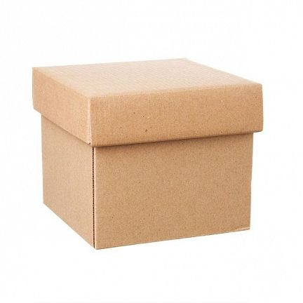

<ion-content>
  <div id="gambar" class="ion-padding">
    
  </div>
  <div id="my_centered_buttons" class="ion-padding">
    <ion-button id="buttonstyle" routerLink="/explore">Explore</ion-button>
  </div>
  <div id="my_centered_buttons" class="ion-padding">
    <ion-button id="buttonstyle" routerLink="/excercise">Excercise</ion-button>
  </div>
  <div id="my_centered_buttons" class="ion-padding">
    <ion-button id="buttonstyle" routerLink="/about">About</ion-button>
  </div>
</ion-content>
